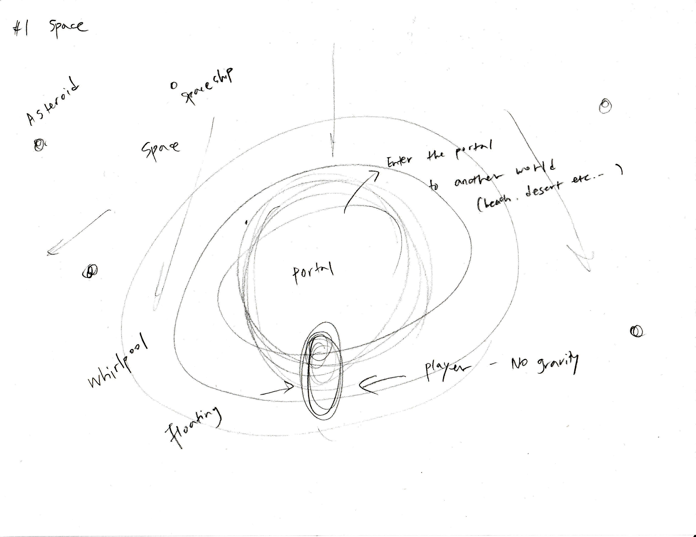
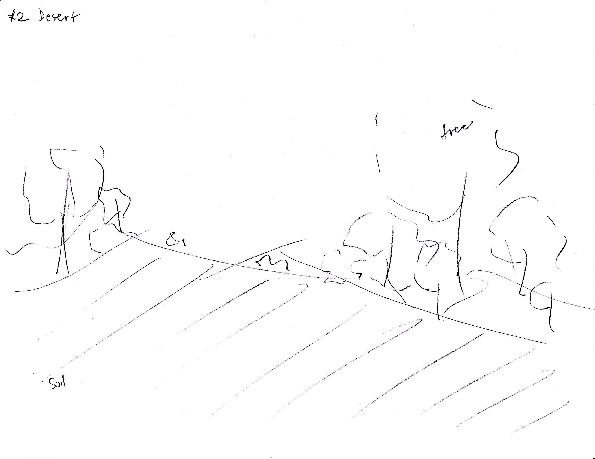

These scripts control movement, portal interaction, and object behavior in the space environment.
My dream space is outer space. Space is a place that humans want to reach but cannot easily access. In my imagined world, people live in space and travel through portals that connect different environments. Through these portals, they can move from space to deserts or even to other planets.
I began by sketching ideas for my dream space environment.


Annotations
Through the portal, people can travel to another environment.
Desert: a different planet with ground where people can walk and move.
These scripts control movement, portal interaction, and object behavior in the space environment.
These videos demonstrate the dream space environment and interactions within the space.
This video shows exploring my dream space using VR.
In this scene, spaceships move around while the player floats in zero gravity. The player can move using the WASD keys. When approaching the portal, the player travels to another planet. On the new planet, the player can walk using the keyboard, and pressing the spacebar triggers other characters to appear from the portal. This interaction demonstrates the transition between different environments in the dream space.
Through this project I explored how different environments can be connected through portals. The space environment allows floating movement, creating a feeling of zero gravity. In contrast, the desert planet introduces a grounded environment where people can walk and move. Designing these two environments allowed me to think about how spatial transitions can shape user experience.